Практичні курси · журнал «ДентАрт» 2024 №2
Реставрація зубів зі спецефектом Natural-Bleach
Teeth Restoration with Natural-Bleach Effect
Ніщо у цьому житті не замінить вам наполегливості. Ні талант – у світі безліч талановитих невдах. Ні геніальність – «невизнаний геній» – це заїжджений вислів. Ні освіта – навколо повно дурнів з дипломами. Лише наполегливість та рішучість мають свою силу.
Рей Крок, засновник імперії Макдональдс
Безумовно, у нашому Всесвіті професії найголовніша місія – зберегти або відновити стоматологічне здоров'я. Для цього нам як спеціалістам потрібно постійно вдосконалюватися і розширювати свої знання та мануальні навички у відновлювальній стоматології, використовувати новітні девайси та пристосування.
За постійними змінами в протоколах, модних авторських техніках, стоматологічних гаджетах, оновлених матеріалах дуже складно встигати, це викликає у деяких спеціалістів бажання постійно гнатися за новинками і постійно змінювати протоколи або переходити з одних перевірених матеріалів на нові розрекламовані. І це все призводить до втрати часу, довіри пацієнтів, самооцінки, репутації.
У той же час популярність прямої композитної реставрації зменшилася на тлі ортопедичних методів лікування в цифровій стоматології, що стрімко прогресують. Однак естетичний потенціал композитного відновлення при грамотному підході та вмілому технічному виконанні залишається дуже високим і дозволяє складати повноцінну конкуренцію непрямим цільнокерамічним реставраціям. Враховуючи, що межі показань для використання цих методів стають усе менш виразними, слід передусім правильно оцінювати переваги обох підходів, а також їхню актуальність у кожному конкретному випадку.
Естетична стоматологія – один з найдинамічніших напрямів у клінічній стоматології. Орієнтація на запити пацієнтів веде до виникнення різноманітних нових методик і технік, які стоматологи пропонують для задоволення бажання пацієнтів мати гарні білі зуби. Вініри і ламінати з кераміки або композитних матеріалів вельми популярні як засіб швидкої зміни зовнішнього вигляду усмішки. Такі процедури естетичного стоматологічного лікування дозволяють відновлювати і коригувати колір, форму і відтворити гармонію зубів та зубних рядів. Однак слід пам'ятати, що фундаментом для естетики слугує функція, і вона ніколи не повинна приноситися в жертву заради естетики.
Адгезивні системи і композитні матеріали, які сьогодні на ринку, можуть повною мірою забезпечувати усунення естетичних вад без застосування радикальних заходів ортопедичного лікування. Технологія естетичної прямої реставрації за типом вініра передбачає не тільки усунення дефекту зі зміною кольору, але й детальне відновлення анатомічної форми, оптичних ефектів та індивідуальних особливостей. Вибір методу відновлення – питання особистих уподобань, потреб і запитів як лікаря-реставратора, так і пацієнта. Затрати часу, технічні питання, лабораторний етап чи його відсутність, матеріал, з якого виготовлена конструкція, фінансовий бік і найголовніше – біологічна вартість, тобто ті обсяги втручання, яких вимагає та чи інша конструкція, – кожен з цих факторів має значення. Наше з вами завдання – пояснити пацієнтам усі ці аспекти і спрямувати їхнє мислення у правильне русло, адже пацієнти не знають багатьох нюансів, їм невідома колірна конструкція в топографії зубів та анатомічні норми, вони керуються переважно відомостями з інтернет-ресурсів, рекламних роликів, де інформація подається не завжди коректно. І якщо в осіб, що належать до шоу-бізнесу, на тлі загального гламурного зовнішнього вигляду і концертного мейкапу білосніжні зуби мають досить гармонійний вигляд, то в інших пацієнтів на тлі звичайного повсякденного одягу оновлені зуби кольору бліч ризикують здатися смішними.
На остаточний результат впливає початкова ситуація, запити та очікування пацієнта, допустимі обсяги інвазії, межі препарування, використовуваний матеріал і технології. Нині є безліч програм і додатків, за допомогою яких кожна людина при бажанні може візуалізувати свій поліпшений зовнішній вигляд, зробити себе на зображенні стрункішою чи об'ємнішою у потрібних місцях, а усмішці надати сяюче-білого кольору. Такі пацієнти приходять до стоматолога, вже маючи чітко сформовані запити. Їхня межа мрій – зуби у вигляді «подушечок орбіт» або кольору сантехнічного фаянсу – для лікаря-реставратора можуть стати професійним провалом. Це так само неприродно, як і популярні в минулому золоті коронки, заради яких деякі пацієнти тоді готові були пожертвувати абсолютно здоровими зубами.
Будь-яка медична маніпуляція має свої показання та протипоказання, але слід зауважити, що подібні втручання мають мало спільного з головними цілями будь-якого стоматолога – відновити і зберегти стоматологічне здоров'я, вони більшою мірою спрямовані на рефрешинг кольору зубів з косметичною метою. Передусім стоматолог повинен з'ясувати у пацієнта мету відвідин клініки і визначити, що найбільше його не влаштовує в естетичному плані. Для кожного клінічного випадку у конкретного пацієнта є одне оптимальне рішення, і роль стоматолога полягає в його виборі.
Відносні показання до естетичної реабілітації кольору методом прямих композитних вінірів: пігментація емалі, дисколорити («тетрациклиновий синдром», флюороз, гіпоплазія), зміни кольору (вікові, посттравматичні, після ендодонтичного лікування), індивідуальні запити на відтінок відбілених зубів при «інстаграм синдромі».
Чітких протипоказань до прямих композитних вінірів немає, але цей метод не рекомендується при функціональній недостатності зубощелепної системи пацієнта, обтяженому ортодонтичному статусі, а також при незадовільній гігієні ротової порожнини і наявності парафункцій. Своєчасне ортодонтичне лікування, протезування при відсутності зубів у бічних відділах або відновлення їх жувальної ефективності має бути пріоритетним завданням для стоматолога.
Етапи реставрації
Планування
Важливим етапом при реставрації зубів є планування. Під час консультації з етичних міркувань і щоб захистити себе з юридичного боку, слід надати пацієнтові всю інформацію про інші можливі варіанти лікування. Для попередньої візуалізації очікуваного результату можна зробити примірку колірної конструкції на одному із зубів, а також продемонструвати схожі клінічні приклади на фотопрезентації. Важливо документувати початкову ситуацію, етапи реставрації і кінцевий результат для порівняння. Якщо виникають сумніви щодо того, який відтінок обрати, допомогти може спеціальна програма DSD (Digital Smile Design), що дозволяє візуалізувати результат лікування ще до його початку. Комп'ютерне моделювання дає можливість спробувати різні форми й відтінки на знімках пацієнта та візуалізувати очікуваний результат у віртуальному режимі.
Пацієнтів, котрі жадають білої естетики, уже важко задовольнити відтінками зі стандартної шкали Vita. Оскільки колірне сприйняття має суб'єктивний характер, то враховуються такі фактори, як освітленість і фон приміщення, одяг пацієнта, ефект втоми при тривалому спостереженні. Серед параметрів, які можуть вплинути на вибір колірної конструкції бліч-реставрації, також виділяють вік пацієнта, колір шкіри, відтінок слизової оболонки ясен, тип усмішки, відтінок основи, що реставрується, і навіть відтінок склер очного яблука.
Визначитися з вибором кольору допоможуть еталонні шкали, на цьому етапі рекомендується реєструвати відповідний шаблон поруч із зубом, що реставрується, і зробити дореставраційну «примірку» матеріалу на зубі з демонстрацією пацієнтові. Це допоможе без труднощів і швидко зробити однозначний вибір кольору майбутньої реставрації.
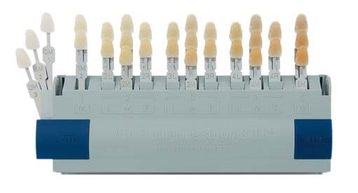
Для успішної реалізації плану реабілітації кольору за допомогою прямих композитних реставрацій потрібен матеріал, який відповідає багатьом вимогам, що висуваються, таким як висока механічна міцність і стійкість до абразивного зносу, оптичні характеристики, властиві природним тканинам, гарна полірованість і стійкість «сухого блиску» поверхні в часі.
На ринку пропонується великий вибір матеріалів, здатних імітувати відтінки відбіленої емалі різної яскравості, але для створення натуральної оптичної анатомії важливо підтримувати градієнт кольору від шийки до ріжучого краю, утрирувати мікрорельєф яскраво виділеними вертикальними і горизонтальними структурами на поверхні реставрації, а також зберегти зубам прозорість. Колірна конструкція має включати, окрім відтінків відбіленої емалі високої яскравості, ще й шар прозорої емалі – для підтримання ефекту гало та візуалізації мамелонів. Це дозволить реставрації мати натуральний вигляд навіть у найбільш ультрасвітлих емалевих відтінках.
Оперативна підготовка, препарування
Будь-яке втручання вимагає чітких протоколів ведення пацієнта, глибина інвазії і вид клінічного виконання безпосередньо залежать від початкової клінічної ситуації.
Якщо колір зубів не вимагає естетичної корекції, у випадках з раніше відбіленими зубами втручання провадиться лише з метою реконструкції форми, і тоді немає потреби повністю перекривати вестибулярну поверхню зуба, препарування робиться з орієнтацією на дефект. Реставрація може виконуватися на непрепарованих зубах (тоді емаль має бути хоча б поверхово зашліфована), і слід розуміти, що кінцевий результат реставрації буде зі збільшенням об'єму. Така тактика виправдана за необхідності збільшення розмірів коронок зубів (наявність трем, діастеми), коли є дефіцит емалевого об'єму.
Щадне ставлення до природних тканин, можливість уникнути радикального препарування, малоінвазивні конструкції – це основні завдання, спрямовані на зниження біологічної вартості реставрації. Емаль має велике значення для адгезії, тому, препаруючи її під композитний вініp, оператор повинен максимально зберегти підлеглу оригінальну структуру емалевого об'єму, обов'язково видаляється лише безпризмовий 30 мкм шар для посилення адгезивного з'єднання. Існують різні думки щодо обробки ріжучого краю, але одне правило залишається незмінним: межа композит – зуб не повинна перебувати в оклюзійному контакті із зубами-антагоністами. Для запобігання цьому досить виявити точки оклюзійного контакту за допомогою артикуляційного паперу і враховувати їх позицію під час планування препарування.
За наявності незначних дефектів, наприклад при крейдоподібно-крапчастій формі флюорозу, або коли є запит на корекцію кольору зубів натуральних відтінків А1, А2, В1, В2 у бік ультрасвітлих відтінків відбілених зубів, тверді тканини препаруються на мінімальну глибину (0,3–0,5 мм), а межу препарування розміщують над яснами. Оптичні властивості композитних матеріалів дозволяють над'ясенній межі препарування залишатися невидимою, тому пришийковий уступ зводять до мінімуму і його не занурюють у зону ясенного жолобка.
Потрібен контроль товщини та оптичної щільності матеріалу для рівномірного перекриття колишнього відтінку зуба.
У ситуаціях з помітними дефектами емалі та дентину при дисколоритах дуже складно повністю замаскувати значну зміну кольору зуба без застосування на внутрішніх шарах реставрації відтінків композиту високої яскравості та опаковості в зоні дентину. У таких випадках допускається радикальніше препарування – для виконання техніки «білого аркуша». Глибина препарування вестибулярної поверхні може досягати 0,9 мм у залежності від ступеня пігментації. Для видалення твердих тканин і досягнення потрібної глибини препарування застосовують коносоподібний алмазний бор із заокругленим кінчиком. Пришийкова межа препарування у вигляді жолоба може мати глибину 0,4–0,5 мм, цього достатньо для маскування внутрішніх тканин зі зміненим кольором.
Клінічний випадок
У цьому клінічному випадку розкриваються ключові аспекти покрокового виготовлення та фінішної обробки прямої реставрації, які загалом демонструють можливості композиту в жанрі естетичної реабілітації усмішки зі спецефектом Natural-Bleach, з тотальним системним відновленням зубів при реконструктивному втручанні.
Пацієнтка, 37 років, звернулася зі скаргою на відсутність естетики передніх зубів і зниження висоти прикусу, яке пов'язане з наявністю старих пломб і функціональним стиранням власних тканин.
Із основних побажань було заявлено про потребу відновити втрачену форму і висоту зубів, але особливу увагу пацієнтка акцентувала на покращенні кольору передніх зубів у більш світлий бік, але з максимально натуральним їх виглядом.
Під час огляду та фотореєстрації виявлені множинні старі реставрації, які вже віджили свій термін і потребують заміни. Функціонально-діагностичний аналіз стану прикусу в різних позиціях оклюзії демонструє стирання усіх зубів, зменшення міжальвеолярної висоти та відсутність коректного іклового ведення при бічних рухах нижньої щелепи. На верхніх і нижніх центральних різцях визначається дефект ріжучих країв, притаманний для шкідливої звички лузання насіння.
Початкова ситуація
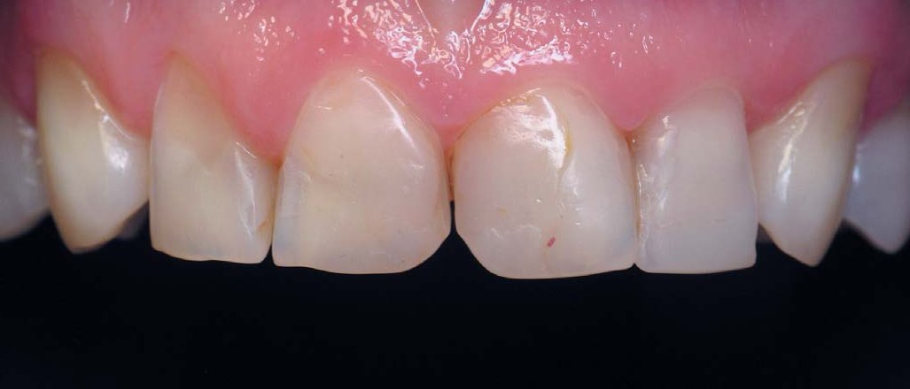
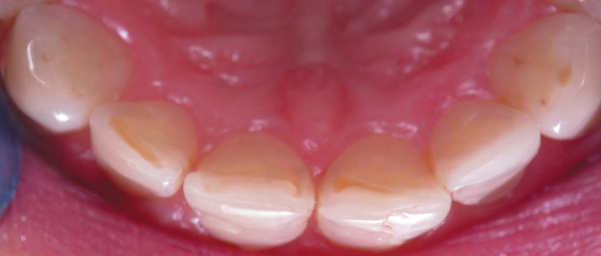
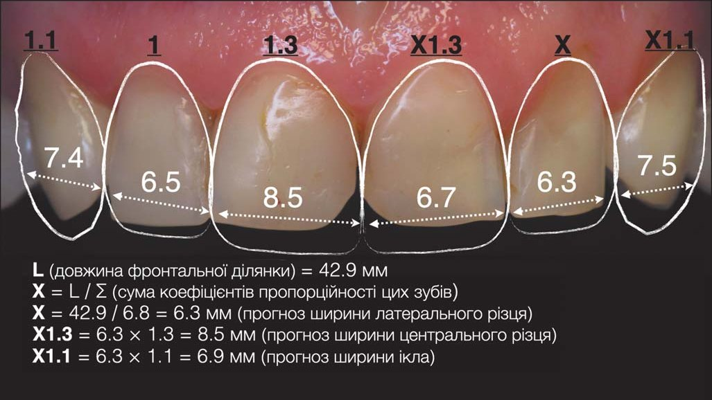
Планування
Був проведений розрахунок зубного ряду для визначення прогнозу розмірів зубів у мезіо-дистальній позиції з використанням правила «золотого перетину». Визначено колір зубів, що відповідає відтінку А2 за шкалою VITA. За такого типу стирання топографічні межі втрачених тканин заторкують зони плащового дентину, основної і прозорої емалі. Для відновлення дентину оберемо матеріал Spectrum TPH, відтінок А3,5 опак, для відтінку імітатора основної емалі при примірюванні підійшов відтінок XL Esthet X HD (Dentsply Sirona), на роль поверхневої емалі було обрано відтінок WE Esthet X HD (Dentsply Sirona), це біла прозора емаль.
Ситуація, коли реставрація без додаткового препарування не лише можлива, але навіть має переваги. Втручання тільки в зонах дефектів стертості та старих пломбованих дефектів, з видаленням змінених тканин у зонах вторинних каріозних процесів.
Реставрація верхніх бічних зубів
Тотальне реконструктивне відновлення починаємо з бічних ділянок верхніх зубів. Покроковий фотопротокол наочно продемонструє послідовність роботи у бічних ділянках верхніх щелеп.
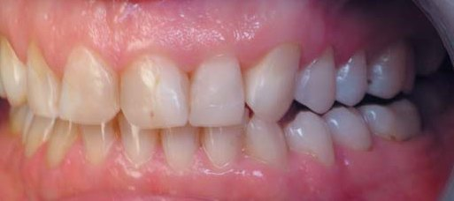
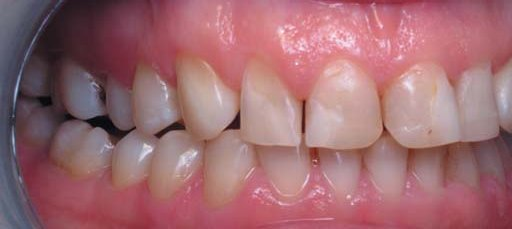
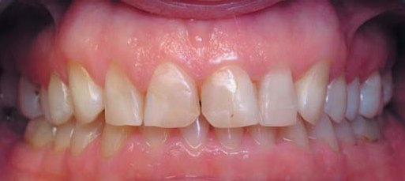
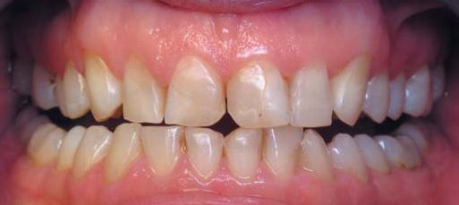
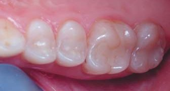
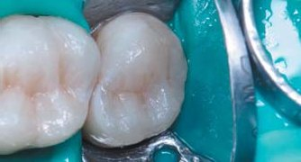
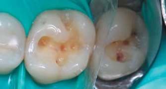
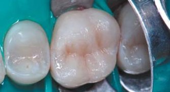
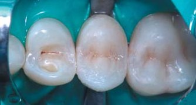
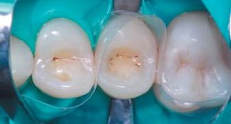
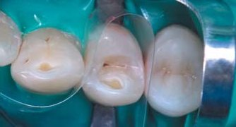
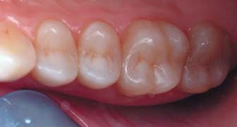
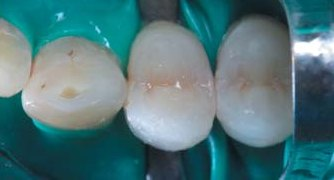
Правий сектор.
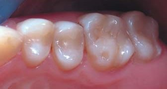
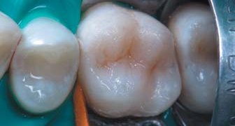
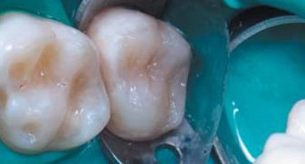
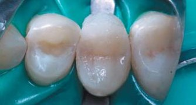
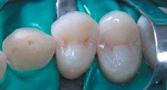
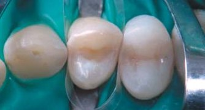
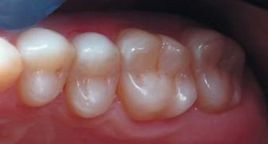
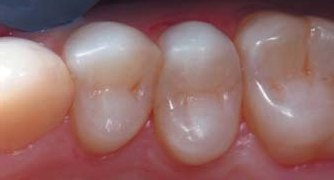
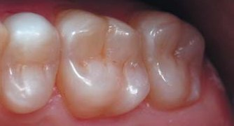
Лівий сектор.
Реставрація верхніх передніх зубів
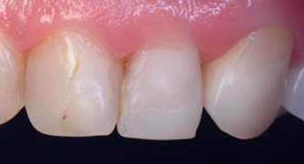
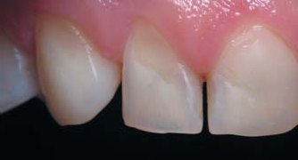
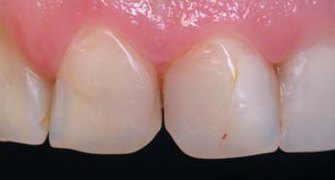
До препарування.
Зовнішній вигляд верхніх передніх зубів до реставрації демонструє естетичні дефекти, пов'язані з наявністю старих пломб у зонах проксимальних контактів, стиранням ріжучого краю та абфракційними дефектами у приясенних ділянках, що підтверджує функціональне перенавантаження передніх зубів. Усі реставрації передніх зубів виконуються в один день, одним оператором, в одному настрої, і дуже важливим є кожен крок за схемою. Завжди починаємо з іклів, це важливі зуби-орієнтири. Вони завжди довші, ніж наступні за ними премоляри і розташовані попереду бічні різці, акцент довжини 1 мм, що забезпечує захист зубів під час функції бічного ведення.
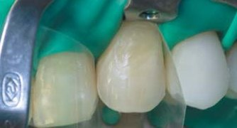
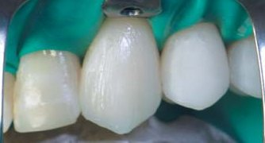
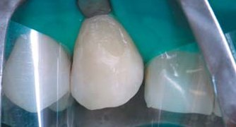
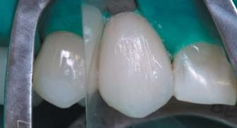
Відновлення зубів 13, 23.
Після мінімально інвазивного препарування фінішними борами з вестибулярної і оральної поверхні важливим етапом будь-якої адгезивної реставрації є ізоляція робочого поля системою рабердам. Після адгезивної підготовки послідовно у тришаровій техніці композитних вінірів реставровані обидва ікла обраними відтінками матеріалів у їх функціональній довжині. Відновлення зроблено з урахуванням розмірів за індивідуальними розрахунками.
Наступна реставраційна сесія – це відновлення латеральних і центральних різців. Під контролем оптичного збільшення видалено старі пломби, препарування орієнтоване на форму існуючих дефектів у проксимальних контактах, з втручанням у пігментований дентин дна і стінок каріозних порожнин. Підготовку поверхні емалевого шару вестибулярної та оральної поверхонь зроблено фінішними борами.
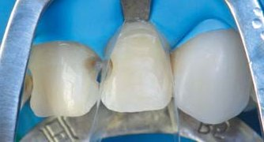
Вигляд зубів 12, 11, 21, 22 після препарування.
Адгезивний протокол виконано в техніці тотального протравлювання з використанням адгезивної системи Prime & Bond Universal (Dentsply Sirona). Передні зуби відновлено в послідовності спочатку шарами матеріалу для відбудови оральної стінки, в топографії втрачених тканин; для імітації дентину адаптований опаковий А3,5 Spectrum TPH (Dentsply Sirona) в зонах дефектів контактних порожнин і ріжучих країв; як шар основної емалі був використаний відтінок натуральної відбіленої емалі XL Esthet X HD (Dentsply Sirona), завершив відновлення оральної стінки останній шар прозорої емалі WE Esthet X HD (Dentsply Sirona).
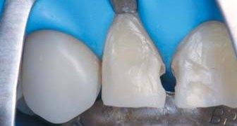
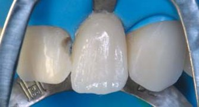
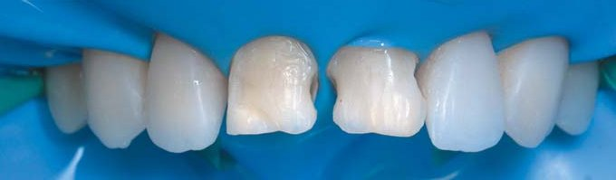
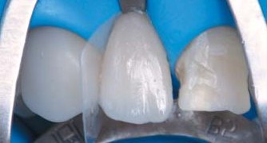
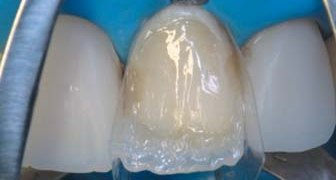
Етапи реставрації зубів 12, 22.
Завершальним етапом побудови реставрації в основі стала послідовна адаптація і полімеризація вестибулярних топографічних шарів основної і прозорої емалі з повним перекриттям поверхні.
Запланована колірна конструкція, яка складалася з одного дентинного і двох емалевих шарів різної оптичної щільності у вигляді внутрішніх мамелонів у зоні ріжучих країв, гарантує стратегічно важливе проходження світла для підкреслення оптичного феномену ефекту гало. Це надасть зубам природного вигляду навіть у такому світлому бліч-відтінку.
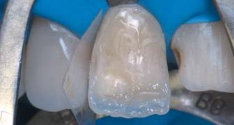
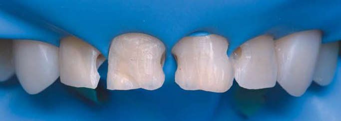
Етапи реставрації зуба 11.
Зовнішні контури закладаються у кожному внутрішньому шарі, підкреслюючи рельєф у кожній адаптованій порції під час моделювання і скульптурування реставрації.
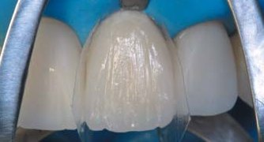
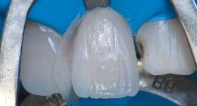
Етапи реставрації зуба 21.
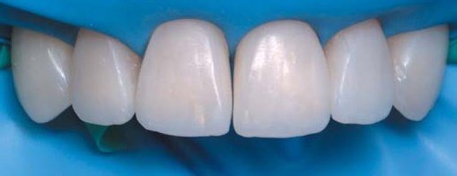
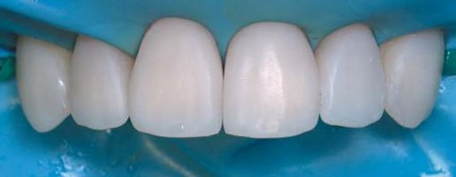
Вигляд реставрації передніх зубів після етапу побудови контактних пунктів.
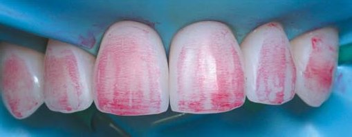
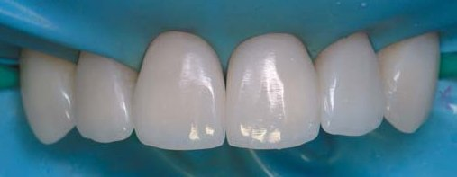
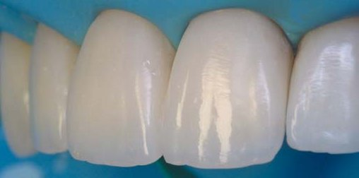
Нанесення мікрорельєфу і первинна фінішна обробка реставрації.
Від цього етапу найбільше залежить природний вигляд реставрації. Адже форма та рельєф зуба визначають його візуалізацію, а правильне відбивання світла від поверхні створює оптичні ефекти. Слід враховувати специфічний нахил кожної площини (цервікальна – опукла, середня – пласка, різцева – має ангуляцію у піднебінний бік). Важливо пам'ятати, що довжина площин симетричних зубів повинна бути однаковою. Вертикальна анатомія створюється за допомогою силіконового конуса Enhance (Dentsply Sirona). Найпростішою і ефективною системою для швидкого полірування можна вважати фінішну техніку полірувальними пастами Prisma® Gloss і Prisma® Gloss extra-fine (з наддрібних мікрочасточок оксиду алюмінію 0,3 мкм).
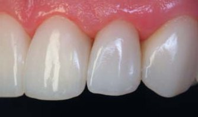
Вигляд завершених реставрацій.
Реставрація нижніх бічних зубів
Правий сектор.
Лівий сектор.
Реставрація нижніх передніх зубів
Результат після реставрації
Фінальна фотореєстрація результату виконаної роботи демонструє, що кардинально оновлена усмішка зі спецефектом Natural-Bleach має природний вигляд, що і було однією з основних цілей. А відновлення зубів у бічних ділянках забезпечить функціональну підтримку фронтального ансамблю.
Керуючись знаннями із формоутворення природної анатомії, з урахуванням індивідуальних розмірів зубів та чітким розумінням їх функції, були не тільки відновлені естетичні характеристики, але й найважливіше – налагоджений функціональний стан усіх зубів.
Цей приклад відновлення слід вважати оптимальним варіантом консервативного втручання, з можливістю у майбутньому корекцій без повної заміни реставрацій, з максимальним збереженням природних тканин, низьким кошторисом і високою естетикою.
По завершенню рекомендованого терміну функціонування 10 років можна буде провести реновацію цих конструкцій вже оновленими і покращеними матеріалами або, вже на вибір пацієнта, в інших, більш інвазивних техніках.
Аналіз стану прикусу в різних позиціях оклюзії після завершення системного реконструктивного відновлення демонструє коректне змикання з відновленням міжальвеолярної висоти, функціональним розвантажувальним бічним веденням, що надважливо для подальшого довговічного функціонування реставрацій у фронтальній ділянці.
Висновки
Варіант реставрації з використанням композиту у прямій методиці є більш економічним, менш інвазивним, потребує значно менше часу для реалізації, здатний забезпечити високий естетичний результат, а за умови адекватного гігієнічного догляду – стабільність зовнішнього вигляду. Завдяки копіткому відтворенню оптичних особливостей натуральних зубів, правильному моделюванню та досягненню високої якості поверхні під контролем мікроскопа можливе створення по-справжньому естетичних та функціональних композитних реставрацій. Натуральна, природна білизна, доглянутість та здоровий вигляд зубів завжди будуть у тренді у наших пацієнтів.
Література
- Джорди Манаута, Анна Салат. Слои. – М.: Азбука, 2014.
- Пашков К. А. История стоматологии: от истоков до XX века. – М.: Печатный дом «Магистраль», 2018. – 368 с.
- Николишин А. К. Флюороз зубов. Полтава: УМСА, 1999.
- Пономаренко О. В. Специальные эффекты в реставрации зубов // ДентАрт. – 2019. – № 1. – С. 22–34.
- Радлинский С. В. Реставрация передних зубов // ДентАрт. – 1998. – № 3. – С. 29–40.
- Радлинский С. В. Биомиметическое направление в реставрации зубов // Маэстро. – 2002. – № 5. – С. 8–17.
- DenBesten P. K., Li W. Chronic fluoride toxicity: dental fluorosis. Monogr. OralSci. 2011; 22: 81–96.